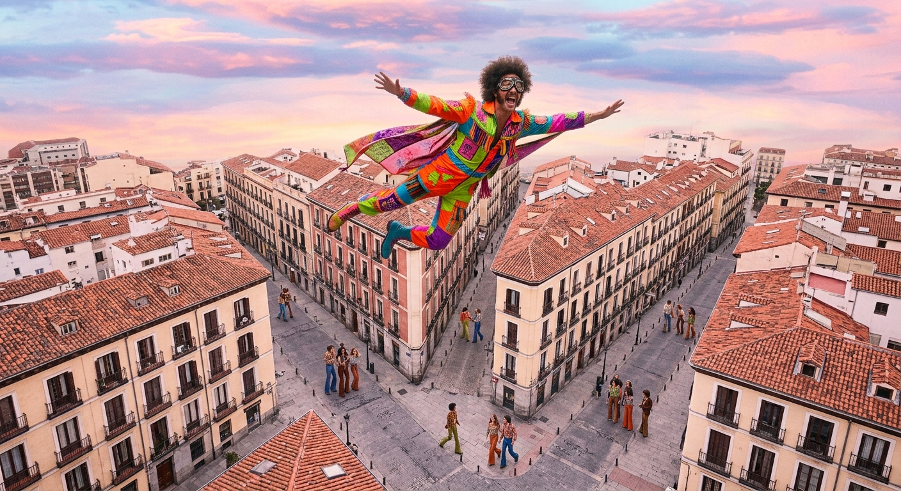

Scopaesthesia
Hoy he tenido un sueño muy extraño. No sé muy bien cómo explicártelo. Ha sido un sueño psicodélico. Eso es. Yo volaba por un cielo de colores pastel con una extraña ropa de colores chillones. De fondo se oía una música sesentera que soy incapaz de identificar. La gente, por debajo de mí, llevaba pantalones de campana y peinados al estilo afro. ¡Buah! Una pasada.
Pero había algo más extraño en el sueño extraño. Yo «notaba» cosas. Sí, no sé. Es difícil de explicar. Además, ya sabes que no siempre se recuerdan todos los sueños, y los que se recuerdan, no siempre los recordamos completos.
Al salir a la calle no puedo quitarme el sueño de la cabeza. Le doy vueltas y más vueltas tratando de encontrarle un significado coherente a tanta psicodelia onírica cuando, de pronto, lo noto claramente. Alguien me está mirando.
Me detengo y, disimuladamente, miro hacia mi espalda. ¡No me lo puedo creer! Parado, en la otra acera, hay un tipo trajeado mirándome. ¿Cómo es posible? ¿Cómo he sido capaz de saberlo? No dejo de darle vueltas; en mi sueño yo «notaba» cosas y ahora, aquí mismo en la calle, he notado la mirada del tipo trajeado.
Decido ponerme a prueba con estas escopaestésicas sensaciones. Sigo caminando prestando una especial atención a mis recién descubiertas capacidades extrasensoriales. ¡Otra vez, otra vez! Siento como un cosquilleo en la nuca. Me giro rápidamente; ¡lo sabía! Caminando detrás de mí hay una chica paseando a un perro..., ¡y me está mirando!
A partir de aquí el resto del día ha sido un infierno. No he dejado de notar los ojos de los otros clavándose en mí constantemente. Corro, ¡huyo hacia casa!
Arrebujado en una manta en el sillón maldigo mi suerte. ¡Yo no he pedido estas capacidades! ¡No quiero este poder! Sólo quiero ser como los demás...
Claro que no se me ocurre pensar que, allí donde nos encontremos con más gente, no podemos escapar de la mirada ajena.